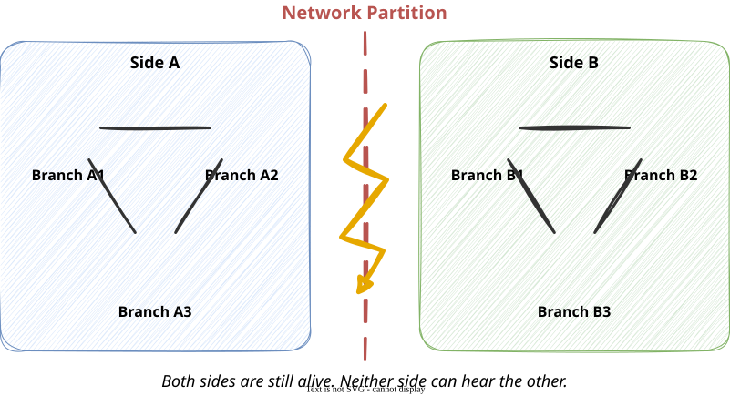

Module 2: Distributed Systems Concepts
Session 1’s punchline: networks are unreliable, nodes fail independently, and there’s no shared clock. None of that is fixable.
Given all of that is permanently true, a real system still has to make some promise to its users. The CAP theorem is a precise statement about exactly which promises you can make at the same time — and which you can’t.
Before the acronym, the plain-language wants:
Think about it
Before you see the formal theorem: do you think a system could realistically promise all three of these, all the time? What would have to be true for that to work?
Consistency (in CAP): every read returns the most recent successfully written value — or an error. No client ever sees stale or conflicting data.
Availability (in CAP): every request to a working node receives a response — the system never simply times out or refuses. That response is not guaranteed to reflect the most recent write.
Important
This precise wording matters for the quiz: Availability means a response happens, not that the response is up to date. Confusing “available” with “correct” is the single most common mistake with this definition.
Partition tolerance: the system continues to operate even when the network splits it into groups that cannot communicate with each other.

A network partition is what happens when the phone lines between two groups of kitchen branches go dead — branches within a group can still talk to each other, but the two groups are cut off from one another.
“Tolerating” a partition doesn’t mean the partition doesn’t happen — it means the system keeps doing something useful on both sides of the split, rather than simply freezing entirely.
The CAP theorem: when a network partition occurs, a distributed system must choose between Consistency and Availability. It cannot have both, at the same time, during the partition.
| Consistency | Every read gets the latest write, or an error |
| Availability | Every request gets a response |
| Partition tolerance | The system keeps working despite a network split |
Important
Why can’t you have all three? During a partition, one side of the split cannot reach the other. If it wants to stay available (answer requests), it must answer using only what it locally knows — which might be stale, violating consistency. If it wants to stay consistent, it must refuse to answer until it can confirm it has the latest data — violating availability. There is no third option once the partition has actually happened.
The theorem is often summarized as “pick two of three” — implying CA (Consistency + Availability, no Partition tolerance) is a valid third choice. In practice, it mostly isn’t.
Think about it
Can you think of any real system, at any scale, where you’d be confident a network partition will never happen? What would have to be true about it?
A distributed order-tracking system has two datacenters, East and West, normally kept in sync. The network between them just went down — a partition.
A customer in the East datacenter’s region asks: “What’s the status of my order?”
Think about it
Which option would you choose if this were a hospital’s patient-monitoring system? Which would you choose for a social media “like” counter? What’s actually different about these two cases?
Consistency-favoring systems sacrifice availability during a partition — they’d rather give no answer than a possibly-wrong one.
Availability-favoring systems sacrifice strict consistency during a partition — they’d rather give a possibly-stale answer than no answer at all.
There is no universally “correct” choice — it depends entirely on which failure mode costs you more.
| Scenario | Cost of stale data | Cost of no answer | Likely choice |
|---|---|---|---|
| Bank balance | High — could overdraw an account | Moderate — customer waits | Consistency-favoring |
| Shopping cart | Low — item count off by one, briefly | High — lost sale | Availability-favoring |
| Airline seat booking | High — double-booked seat | Moderate — customer retries | Consistency-favoring |
| Social media like count | Very low — nobody notices | Low-moderate — feels broken | Availability-favoring |
Think about it
Pick a system you use often. Would you guess it favors consistency or availability — and what evidence from how it behaves when things go wrong would tell you which one it actually is?
You now have the vocabulary to analyze a real distributed system failure precisely: was it a Consistency problem, an Availability problem, or the moment a partition forced a choice between them?
Friday: we apply exactly this to a real, documented outage.
COSC420 · Module 2 · Distributed Systems Concepts